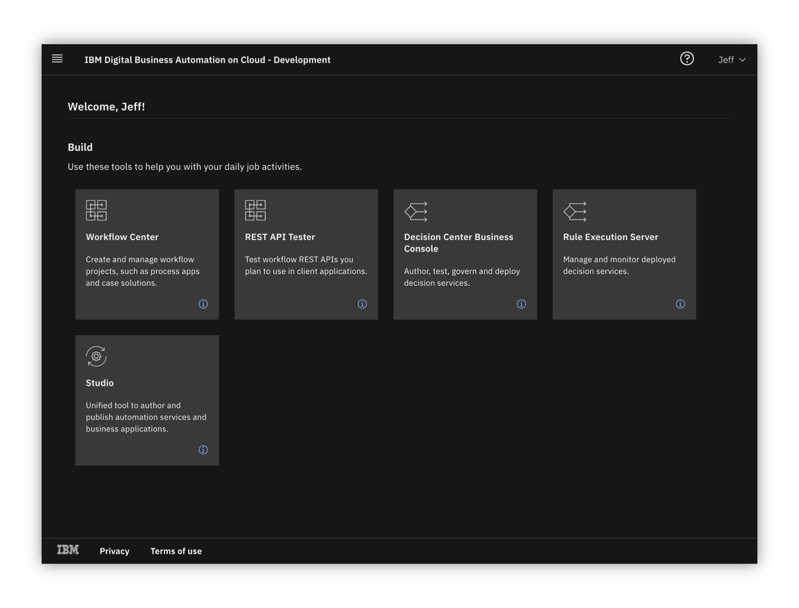
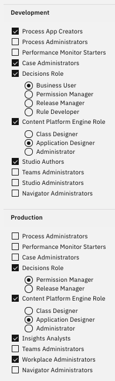
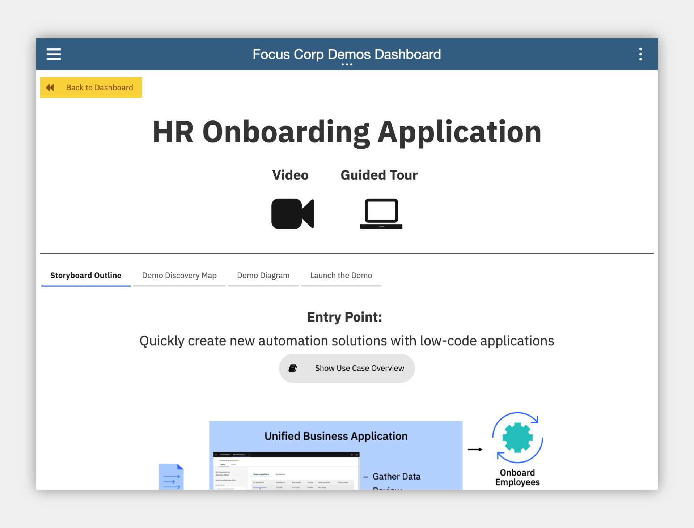
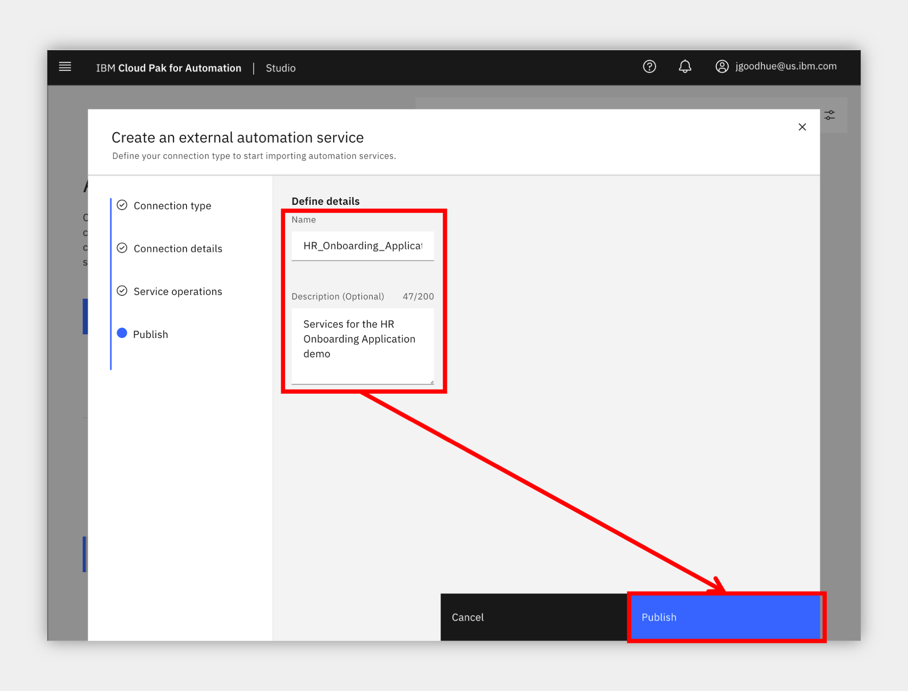
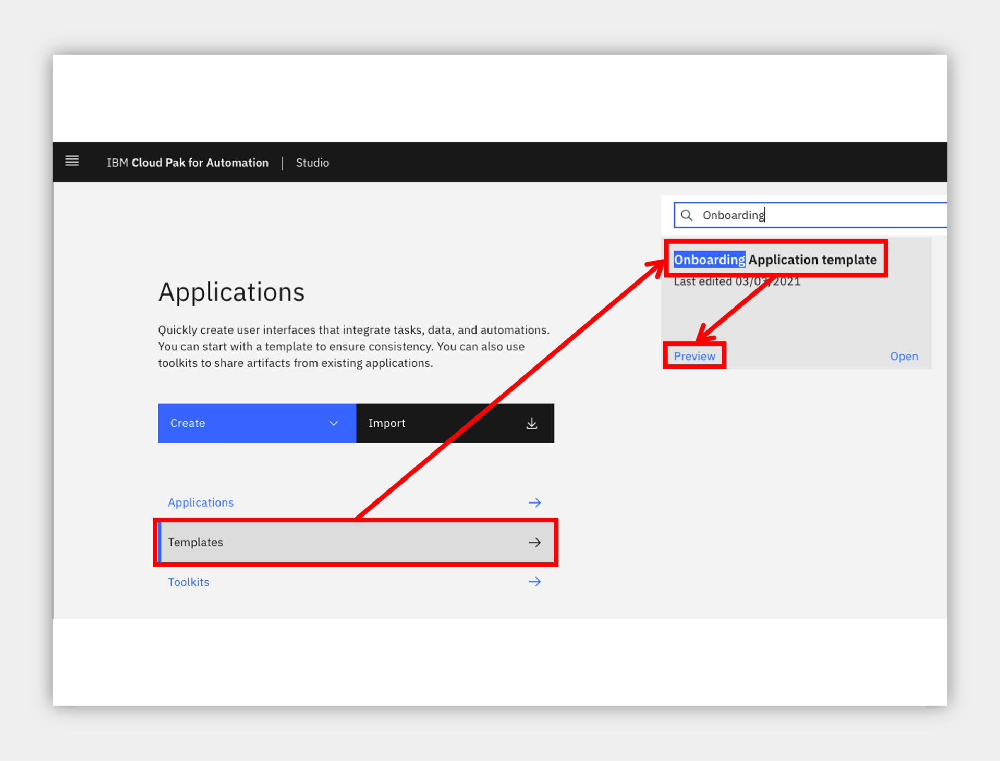
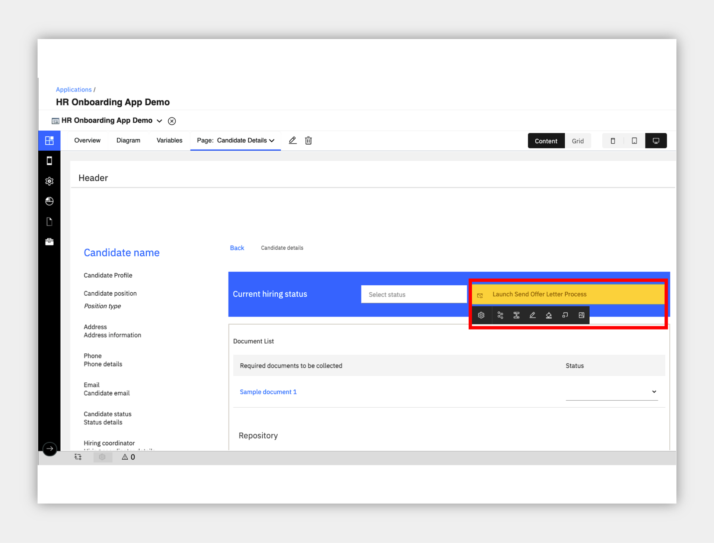
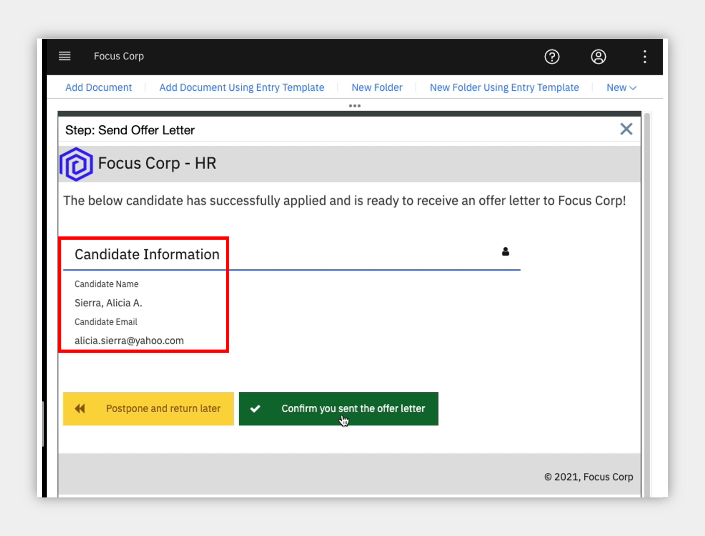

HR Onboarding Application¶
an IBM Cloud Pak for Business Automation use case
Introduction2¶
Use Case Overview: Existing HR applications are not easily modified and often require the IT team to work with the vendor and make code changes. There are often higher priority development projects that deliver customer value than HR. The result: adhoc spreadsheets, emails and local file shares and a disorganized process inhibits the flow of applicants and HR teams are frustrated with slow results. It's time for an easy to use low-code build environment where HR can create dynamic applications that connect to existing systems and deliver value quickly.
Choose an option:
- Digital Business Automation on Cloud trial: your environment is predeployed, continue to the Getting Start Lab section below.
- Install Yourself: To deploy HR Onboarding Application on your own environment, and technical architecture information, see the dba-hr-onboarding-app git repository which includes the required deployment artifacts.

Getting Started Lab¶
Are you ready to build low-code business applications?
1. Scenario Introduction - HR Onboarding Application¶
Expand to view
Demo Video
In this demo, you will build a low-code business application that connect to existing systems for workflow and decisions
Demo Outline
- Use Case Overview
- Focus Corp Demo Dashboard review
- Application Assembler persona
- Automation service creation
- Preview onboarding application template
- Create application from template
- Add automation services to application
- Preview application
- HR Specialist persona
- Run the application
- Use case review and value of low-code applications
Discovery Map

Process Diagram

2. Login to Your Digital Business Automation on Cloud Trial¶
Expand to view
Login to your Digital Business Automation on Cloud trial here to access your portal.
Don't have a trial yet? Sign up to get started or see the dba-hr-onboarding-app git repository to deploy on your own platform.

3. Setup Your Trial SaaS Environment¶
Expand to view
First time in your trial environment? Here are some recommended setup steps to get the best experience!
IMPORTANT - Assign Your Roles
You will need to make sure you have the correct roles to use the environment.
- Open the menu in the upper left.
- Under Administer subscriptions, click Access management.
- Locate or search for your user and ensure all environments (Development and so on) are activated.
- Click the pencil icon on the right side of your user row and ensure at least the required roles are selected.
- Optionally add all adinistrator roles as appropriate.
Required Roles

All Administrator Roles

Setup your Process Portal¶
It is recommended to make the Focus Corp Demo Dashboard your default dashboard.
- Log in to your Process Portal environment.
- Under Dashboards click Show more... and click the icon next to Focus Corp Demo Dashboard and click the star icon.
- Drag the right-side handle of that dashboard row to the top so this will load when you start Process Portal.
Personalize your Process Portal¶
- Click the Edit Profile link in the upper left
- Add a picture
- Set notification settings as desired
4. Open the Focus Corp Demo Dashboard¶
Expand to view
- Open the menu in the upper left
- Select Production and then Run
- Click the Process Portal tile
- Wait for the portal to load in a new browser window/tab

- On the left menu, under the Dashboards, click Show more/less…
- Click Focus Corp Demos Dashboard
- Wait for the dashboard to load on the right

Start by reviewing the available demos, they all represent an entry point to business automation so you can easily get started.

When ready, click the green HR Onboarding App button to launch the demo.
5. Tour Business Automation Studio¶
Expand to view
Create your own business app and drive automation
You are now a member of the HR team that has some interest and experience building simple apps such as office scripts or web sites and would like to help your HR Specialist colleagues and make their jobs easier.
As an Application Assembler, you decide to create a low-code business appllication that connects to existing systems for workflow and decisions in a unified experience.

- Check the tabs to learn more about the demo
- Storyboard Outline
- Demo Discovery Map
- Demo Diagram
- Navigate to the Launch the Demo tab and then click on the picture of the Application Assembler

- Allow Studio to load and then take a look around.
6 - Create an automation service¶
Expand to view
Before you build your application, let's find and connect to some existing workflow and decision services to use within the application. Studio can connect to external business automation services you already have today and unify them in a single application user experience with the low-code Application Designer.
- In the middle, click Automations to load the business automations section

- Click Create -> External and wait for the dialog to appear (this can take multiple seconds the first time you use the interface).

- Select to create your automation service From a new connection unless another person using the environment already created a connection to the Business Automation Workflow instance that contains the HR Onboarding Application Services process application.

- Enter your connection information as below and please be exact as the format is important.
- Connection Name: any name you will recognize
- Scheme:
https - Host: the URL for your BAW environment, this is currently the following format
https://<hostname>/dba/devso for examplehttps://cp4ba-trial01.automationcloud.ibm.com/dba/dev - Port:
443 - Username: the username of a non-SSO service credential created by the administrator of your BAW environment
- Password: the password of a non-SSO service credential created by the administrator of your BAW environment
- When done, click Next
- Select the HR Onboarding Application Services process application in the drop down.
- Select all operation checkboxes and click Next.
- Update the name and description as desired and click Publish

NOTE: be sure to remember the name as you will use this in a future section.
- Wait to receive an External service published notification in the upper right before proceeding.
7. Preview onboarding application template¶
Expand to view
Now that you published the external automation services, you are ready to create your busienss application. You decide to look for a template to accelerate application assembly.
- Click the upper left menu and select Applications

- Click Templates to show all the templates in the Studio environment.
- Locate or search for the Onboarding Application template and click Preview on the tile.
NOTE: it may take some time for the template to be deployed and run, more than 10 or 20 seconds in some cases.
NOTE: the application will launch in a new browser window/tab so be sure to look for the browser notification and allow it to launch.

- Explore the application:
- Try using the filters or search on the left side to find a candidate.
- Once you select a Candidate it will load a details page (that can take a moment).
- Try out some of the drop downs for status on the right side.
- Once you are done, close that browser window/tab and come back to the Studio page.
- Click Create -> Application (this can take multiple seconds the first time you use the interface).

- Select the Onboarding Application template and give it a name and optional purpose.

Congratulations, you created your business application!
8. Add automation services to your application¶
Expand to view
Now that you have an application, you can add the automation services you published so you can use them in the low-code build environment.
- On the right, locate the All views drop down under Drag a component to your page header, click and select Automation service at the bottom.
- Click the Add + button
- Click to select the name of the automation service you published earlier and then select all the operations and click Next.

- Now that you the automation service is in the palette on the right, click and drag it into the application as pictured below (or you can choose another location if you prefer).

- First, select the operation at the top as HR_Send_Offer_Letter.

- Now, we need to map data stored in the application (provided by the template) to the automation service so it will be sent to the HR Send Offer Letter process. Make the following changes for the first variable row in the Inputs section:
- under Variable options, click the drop down and select Use existing variable
- under Variable names, click Select and expand selectedCandidateDetails and select fullname.
- under Create field, uncheck the box as we do not need to see the candidates name since it is already in the upper left corner.
- Repeat the same three steps above, selecting selectedCandidateDetails -> personalEmail for the second step.
- Click Done.
A new button is added to the application that will launch the process and send the two variables automatically!
- Feel free to click the button and edit it using the palette that appears directly below. I would recommend using the pencil to change the name and you can also use the paint bucket to change the color.

Next, we will add the second automation service to the application, a decision service to calculate a suggested salary based on information from the candidate and position.
- Use the right palette to click and drag the same automation service on to the application, this time below the blue header (or in a location you prefer).

-
Select the operation at the top as Calculate_Candidate_Salary_Range.
-
Map the data stored in the application to the automation service as before so the business rules can use it to make the decision. Make the following changes for the first variable row in the Inputs section:
- under Variable options, click the drop down and select Use existing variable
- under Variable names, click Select and expand selectedCandidateDetails -> jobDetails -> jobStatus.
- under Create field, uncheck the box.
- Repeat the same three steps above for the remaining three variables using the following values for the second step:
- selectedCandidateDetails -> country
- selectedCandidateDetails -> jobDetails -> jobLevel
- selectedCandidateDetails -> employmentType
- For the output variable at the bottom, you may retain the defaults to Create a new variable and Create field on page.
- Click Done.

The result is that three elements are added to the page: a button to launch the service and two decimal/numeric fields for the output of minimum and maximum.
-
If you wish, you can perform some layout to move them around. For example, right click on the button just added and create a horizontal layout or panel before it, then drag the three elements into it.
-
You may also try clicking on one of the numeric fields such as Minimum and clicking the gear to configure it, try to locate Format and set it to Currency to automatically show a currency symbol for your country.
Congratulations, you added a workflow and decision service to your application, all without writing any code!

9. Preview the completed application¶
Expand to view
Let's preview the application again and try out the automation services you added.
- In the upper right, click Preview.
NOTE: as before, it may take some time for the template to be deployed and the application will launch in a new browser window/tab which may be blocked by your browser.
- Search or select a requisition and then a candidate to open the candidate details page to see the automation services you added.

- Click the second button you added for the Calculate Candidate Salary Range decision service, the values should be updated in the UI within a few seconds.

- Click the first button you added for the HR Send Offer Letter process, this will launch a process in the background.

-
To see the process task you will need to open the workflow server's task list which is visible in a few locations:
- Option 1 - a Digital Business Automation on Cloud (SaaS) trial
- go back to the SaaS portal that you first logged into and use the menu at the upper left to select Development and then Run and finally the Navigator tile.
- Use the upper left menu in Navigator and look for the Work Dashboard feature to load the task list.
- If the above feature is not available in Navigator, you may also load the Process Portal tile from the Development -> Run page.

- Option 2 - your own environment
- open the Process Portal or Navigator -> Work Dashboard for the Business Automation Workflow server you used in the external automation service connection above.
- Option 1 - a Digital Business Automation on Cloud (SaaS) trial
-
Once you locate the Send Offer Letter task you can click to open it and see the data passed from your application to the process.

10. Summary¶
Expand to view
In just a few minutes, you created, tested and published a new, low-code business application from a template and connected it to existing workflow and decision automation services. This low-code experience enables greater control and simplicity in application authoring while accelerating time to value for the business teams that use the applications.
Full Demo Narration¶
Expand to view
Intro¶
HR teams manage adhoc processes outside their systems of record, gathering data, performing reviews, sending offers, looping around to do rework unfortunately before finally obtaining the goal to onboard an employee. Additionally, HR Specialists use multiple, disparate systems to complete their work and can easily lose track of the process.
It's time for an easy to use low-code build environment where HR can create dynamic, unified business applications that connect to existing systems and deliver value quickly.
Demo Start Page¶
Reviewing the demo launch page we see a text summary describing the demo along with a discovery map and diagram for our reference. OK, let's launch the demo.
Studio Intro¶
Welcome to the Studio low-code build environment. As an Application Assembler you can use Studio to create Applications and connect to Business Automations.
Automation service creation¶
Before we build our application, let's find and connect to some existing workflow and decision services that we want to use. Studio can connect to external business automation services you already have today and unify them in a single application user experience with the low-code Application Designer.
After we connect to Business Automation Workflow HR environment, Studio prompts us to select our the application and operations to automatically import. We'll select send offer letter and calculate salary range. The Studio imports and automatically publishes a service and we can confirm the operations and relevant inputs and outputs. Now we are ready to create our application!
Preview onboarding application template¶
Studio includes multiple templates to start from, let's preview and try out the Onboarding Application template. The app pulls in our sample requisition and candidate data and provides an easy to use search and filter on the left. After selecting a candidate, we see their details and status; let's mark Alicia as Prepare to onboard, and then change some document status values.
Create application from template¶
This template looks good, let's use it to create our own application.
Add automation service¶
We start in the low-code Application Designer and it's time to import our automation services from before so we can add them to the app. It's as simple as drag and drop. Let's add a button for send offer letter at the upper right, we select the operation, map the data since it already exists in our app from the template, and my button is automatically added. Don't like grey buttons? Change it to yellow, rename it, add an icon and make it a little smaller. All with no code, we just integrated to an existing external workflow from inside our app!
We also need to add that calculation service that uses business rules to decide a recommended salary range. Let's drag it just below the right header and map the data in very much the same way as the other service. This service returns an output so we let Application Designer create a new variable to hold it and add it to the page automatically, so simple. With multiple elements on the screen, let's do some simple layout by adding a panel and dragging the fields into it. We can also do advanced formatting such as setting the field to currency for the symbols and decimal places or moving to advanced mode to set a read only status and much more. After doing the same to the second field, and formatting the button, we are ready to preview our app!
Preview and use automation services¶
Now in the running app, after selecting one of the candidates we immediately see our edits live. First, let's calculate the salary range and see the values that the decision service brings back based on the candidate data. Now, before we launch the send offer letter process, let's bring up the current work list. On the right we see one task from an older process. Now when we click to send a new offer letter, another task appears on the right for the assignee to complete. For testing, we can even open the task and see the application passed along the required data. Looks good to me.
Run in Navigator¶
After deploying to the production runtime, called Navigator, we can see the app appear on our home screen, run it and use it as before during the preview but now in a unified Navigator environment with multiple applications and tabs all in one experience and interface!
Use Case Summary¶
We just used the low-code Studio environment and its Application Designer to create a dynamic business application from a pre-built template to accelerate time to value. Then we connected to external automation services including existing workflows and decision services, to help automate the onboarding process. It's time to remove frustration and slow business results and replace them with productive and happy employees and customers.